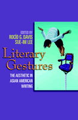

<body bgcolor="#FFFFFF" text="#000000" link="#0000FF" vlink="#CC0000" alink="#CC0000"><center><hr width="350" size="1" align="center" noshade>Form as function in Asian American literature<hr width="350" size="1" align="center" noshade><p><a href="https://cdcshoppingcart.uchicago.edu/Cart/ChicagoBook.aspx?ISBN=9781592133642&&PRESS=temple" target="_top">Buy this book!</a> | <a href="https://cdcshoppingcart.uchicago.edu/Cart/Cart.aspx?PRESS=temple" target="_top">View Cart</a> | <a href="https://cdcshoppingcart.uchicago.edu/Cart/Cart.aspx?PRESS=temple" target="_top">Check Out</a></p><p></p></center><!--none//--><h1>Literary Gestures</h1>
<H2>The Aesthetic in Asian American Writing</H2>
<h3>edited by Roc�o G. Davis and Sue-Im Lee</h3>
<P>cloth 1-59213-364-9 $80.50, Nov 05, <FONT COLOR=#990033>Available</FONT>
<br>paper 1-59213-365-7 $31.95, Nov 05, <FONT COLOR=#990033>Available</FONT>
<br>Electronic Book 1-59213-366-5 $31.95 <FONT COLOR=#990033>Available</FONT>
<BR> 248 pp
6x9
</P><h3 align="center"><P><font color="#996633">Outstanding Academic Title, <i>Choice</i>,
2006</font></P>
</H3>
<BLOCKQUOTE><I>"The editors and authors have done an excellent job of offering essays that are individually and collectively on point, consistently illuminating, and thoroughly enjoyable&#151the volume, with respect to this last point, reflects the pleasures and power of aesthetic investigation of which it speaks."</i>
<br>&#150<b>Kandice Chuh</b>, University of Maryland, College Park<i></I></BLOCKQUOTE>
<p><i>Literary Gestures:The Aesthetic in Asian American Writing</i> contests the dominance of materialist and cultural critiques in Asian American literary discourse by re-centering critical attention around issues of aesthetics and literary form. Collapsing the perceived divisions between the "ethnic" and the "aesthetic" in Asian American literary criticism, the eleven original essays in this volume provide theoretically sophisticated and formally sensitive readings of works in prose, poetry, and drama. These contributions bring discussions of genre, canonicity, narrative, and literary value to the fore to show how aesthetic and formal concerns play an important part in the production and consumption of these works. By calling for a more balanced mode of criticism, this collection invites students and scholars to reinvest in the literary, not as a negation of the sociopolitical, but as a complementary strategy in reading and understanding Asian American literature.
<BR>&nbsp;<h2>Excerpt</h2><P>Excerpt available at <a href="http://www.temple.edu/tempress">www.temple.edu/tempress</a></p>
<BR>&nbsp;<h2>Reviews</h2>
<p><i>"An exciting collection on a subject of immediate importance in several areas of the humanities, </i>Literary Gestures<i> is a powerful response to the call in recent years for the return to the aesthetic, with a difference. Roc�o Davis and Sue-Im Lee have produced a path-breaking book on the aesthetic in Asian American writing that immediately transforms the field. A group of outstanding scholar/critics provide reassessments of a range of established and new writings and on compelling topics that are central to the areas of cultural studies, U.S. Studies, and Pan-Pacific literatures. This is essential for anyone working in these interrelated fields."</i>
<br>&#151<b>Emory Elliott</b>, University Professor, University of California, Riverside
<p><i>"A brilliant introduction frames the essays... This groundbreaking book of essays is a must for any scholar of Asian American literary studies, or indeed, ethnic literature in general.... Essential."</i>
<br>&#151<b><i>Choice</i></b>
<p><i>"These scholars effectively critique contemporary multicultural criticism�s inability or unwillingness to encompass the aesthetic."
</i><br>&#151<b><i>Melus</i></b>
<BR>&nbsp;<h2>Contents</h2><P>
<p>1. Introduction: The Aesthetic in Asian American Literary Discourse &#150 Sue-Im Lee
<p><b>Part I. Asian American Critical Discourse in Academia</b>
<br>2. Autonomy and Representation: Aesthetics and the Crisis of Asian American Cultural Politics in the Controversy over <i>Blu's Hanging</i> &#150 Mark Chiang
<br>3. Interventing Innocence: Race, 'Resistance,' and the Asian North American Avant-Garde &#150 Iyko Day
<p><b>Part II. Aesthetics and Ethnicity</b>
<br>4. The Asian American in a Turtleneck: Fusing the Aesthetic and the Didactic in Maxine Hong Kingston's <i>Tripmaster Monkey</i> &#150 Mita Banerjee
<br>5. The Language of Ethnicity: John Yau's Poetry and the Ethnic/Aesthetic Divide &#150 Christina Mar
<br>6. "A Flame against a Sleeping Lake of Petrol": Form and the Sympathetic Witness in Selvadurai's <i>Funny Boy</i> and Ondaatje's <i>Anil's Ghost</i> &#150 Patricia P. Chu
<br>7. Poignant Pleasures: Feminist Ethics as Aesthetics in Jhumpa Lahiri and Anita Rao Badami &#150 Gita Rajan
<p><b>Part III. Intertexts: Asian American Writing and Literary Movements</b>
<br>8. "A Loose Horse": Asian American Poetry and the Aesthetics of the Ideogram &#150 Josephine Nock-Hee Park
<br>9. "A New Rule for the Imagination": Rewriting Modernism in <i>Bone</i> &#150 Donatella Izzo
<p><b>Part IV. Rewriting Form, Reading for New Expression</b>
<br>10. Performing Dialogic Subjectivities: The Aesthetic Project of Autobiographical Collaboration in <i>Days and Nights in Calcutta</i> &#150 Roc�o G. Davis
<br>11. Bicultural World Creation: Laurence Yep, Cynthia Kadohata, and Asian American Fantasy &#150 Celestine Woo
<br>12. Dismantling the Realist Character in Velina Hasu Houston's <i>Tea</i> and David Henry Hwang's <i>FOB</i> &#150 Kimberly M. Jew
<p>Notes
<br>Notes on Contributors
<br>Index
</P><BR>&nbsp;<H2>About the Author(s)</H2>
<P><b>Roc�o G. Davis</b> is Associate Professor of American and Postcolonial Literatures at the University of Navarra and author of <i>Transcultural Reinventions:
Asian American and Asian Canadian Short-Story Cycles</i>.</P>
<P><b>Sue-Im Lee</b> is Assistant Professor of English at Temple University.</P>
<P>Contributors: Mita Banerjee, University of Siegen, Germany; Mark Chiang, University of Illinois-Chicago; Patricia P. Chu, George Washington University; Iyko Day, University of California-Berkeley; Donatella Izzo, Universita degli Studi di Napoli "L'Orientale," Italy; Kimberly M. Jew, Washington & Lee University; Christina Mar, University of California-Riverside; Josephine Nock-Hee Park, University of Pennsylvania; Gita Rajan, Fairfield University; Celestine Woo, Fort Lewis College; and the editors.</P>
<BR><H2>Subject Categories</H2>
<p><A HREF="/tempress/asian_amer.html" TARGET="_top">Asian American Studies</a>
<BR><A HREF="/tempress/literature.html" TARGET="_top">Literature and Drama</a>
<BR><A HREF="/tempress/cultural.html" TARGET="_top">Cultural Studies</a>
</p>
<p align="center"><a href="https://cdcshoppingcart.uchicago.edu/Cart/ChicagoBook.aspx?ISBN=9781592133642&&PRESS=temple" target="_top">Buy this book!</a> | <a href="https://cdcshoppingcart.uchicago.edu/Cart/Cart.aspx?PRESS=temple" target="_top">View Cart</a> | <a href="https://cdcshoppingcart.uchicago.edu/Cart/Cart.aspx?PRESS=temple" target="_top">Check Out</a></p><p><font face="Arial" size="1"><a href="copyright.html" onMouseOver="window.status='Web Copyright Policy';return true;" onMouseOut="window.status=''" title="Web Copyright Policy">&copy;</a> 2015 <a href="http://www.temple.edu" target="new" onMouseOver="window.status='Link to Temple University home page';return true;" onMouseOut="window.status=''" title="Link to Temple University home page">Temple University</a>. All Rights Reserved. http://www.temple.edu/tempress/titles/1793_reg.html</font></p>